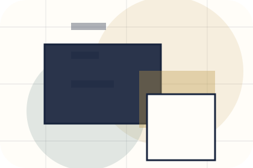
Context
Positioning gives the page a specific angle instead of repeating the navigation label.
Personal Brands
Author essay and media system for authority and booking confidence.

Home / 02
Positioning adds editorial context to the home route, using the author essay and media system structure to support authority and booking confidence before visitors choose a next step.
Brand uses essay media cards and focused copy to make the decision easier to scan, aligning the section with authority and booking confidence rather than filling space.
Open Profile
Positioning gives the page a specific angle instead of repeating the navigation label.
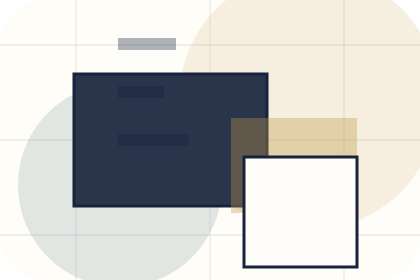
The essay media cards show what to compare, what to avoid, and what matters most for personal brands, creators & public figures visitors.
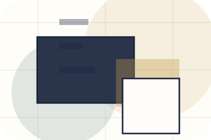
The final cue points to a useful internal route so the section keeps the journey moving.
Home / 04
Work adds editorial context to the home route, using the author essay and media system structure to support authority and booking confidence before visitors choose a next step.
Brand uses essay media cards and focused copy to make the decision easier to scan, aligning the section with authority and booking confidence rather than filling space.
Open MediaWork gives the page a specific angle instead of repeating the navigation label.
The essay media cards show what to compare, what to avoid, and what matters most for personal brands, creators & public figures visitors.
The final cue points to a useful internal route so the section keeps the journey moving.
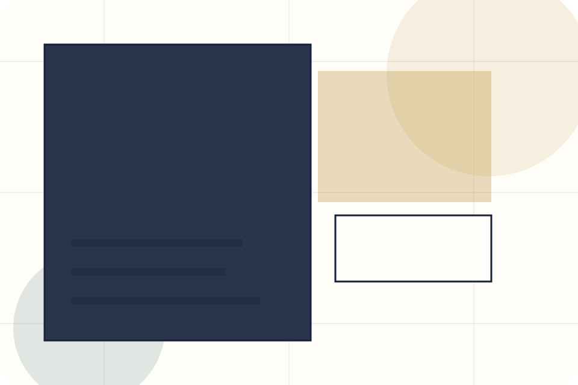
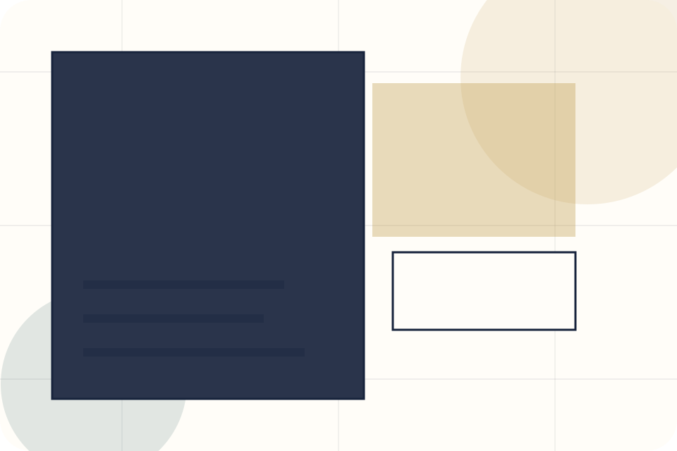
Home / 05
Media adds editorial context to the home route, using the author essay and media system structure to support authority and booking confidence before visitors choose a next step.
Brand uses essay media cards and focused copy to make the decision easier to scan, aligning the section with authority and booking confidence rather than filling space.
Open SpeakingBrand structures media around context, judgment, and a clear next route so visitors can compare the block quickly before they book an appearance.
Book AppearanceEditorial author hero
Select the closest route and Brand keeps the next step, proof, and follow-up expectation aligned with authority and booking confidence.
Home / 06
Speaking adds editorial context to the home route, using the author essay and media system structure to support authority and booking confidence before visitors choose a next step.
Brand uses essay media cards and focused copy to make the decision easier to scan, aligning the section with authority and booking confidence rather than filling space.
Open Insights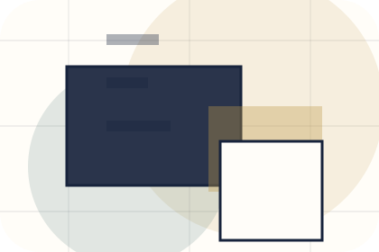
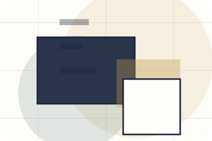
Speaking gives the page a specific angle instead of repeating the navigation label.
Home / 07
Proof shows what changes after the work: clearer decisions, visible progress, and proof points that connect the offer to real outcomes.
The layout connects before-and-after thinking with measured outcomes, making the result easy to scan without promising what the business cannot guarantee.
Open WorkThe uncertainty, delay, or missed opportunity visitors bring into proof.
The clearer, safer, or more valuable state Brand is designed to support.
The visible cue that connects proof to a believable decision, not a loose claim.
Home / 09
Questions handles buying doubts directly so visitors can understand timing, fit, limits, and the safest next step.
Answers are short by design: enough to remove hesitation, not so much that the page turns into documentation before the visitor can act.
Open Contact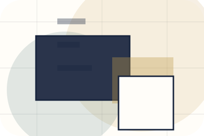
Questions gives the page a specific angle instead of repeating the navigation label.
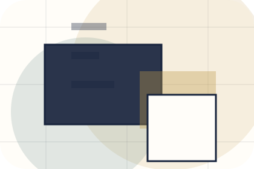
The essay media cards show what to compare, what to avoid, and what matters most for personal brands, creators & public figures visitors.
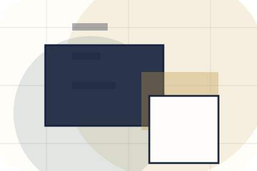
The final cue points to a useful internal route so the section keeps the journey moving.
Brand starts with a focused intake so the recommendation matches the visitor's context, risk, timing, and readiness.
Each route explains inclusions, exclusions, documents, timing, and the decision points that affect final delivery.
The theme uses author essay and media system, essay media cards, and media filter, speaking topic selector, press kit download rather than a shared template rhythm.
Editorial author hero
Select the closest route and Brand keeps the next step, proof, and follow-up expectation aligned with authority and booking confidence.
Home / 10
Brand closes the home route with a clear action, a quick reminder of the value, and a low-friction way to book an appearance.
Visitors who are ready can use the primary action. Visitors who are still comparing can scan the section links, proof, and support routes before they book an appearance.
Book AppearanceThe final block keeps the choice simple: act now, compare one more proof route, or send enough detail for a focused response.
Book Appearanceauthority and booking confidence
A personal brand site with editorial essay rhythm, speaking/media cards, newsletter conversion, and booking clarity. Home ends with a direct path to book an appearance, plus enough context for visitors who still need to compare.
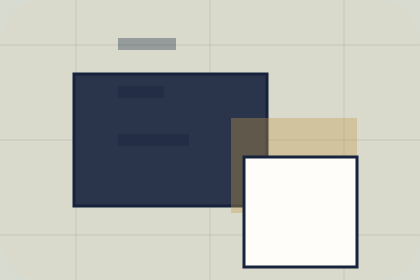
Book Appearance